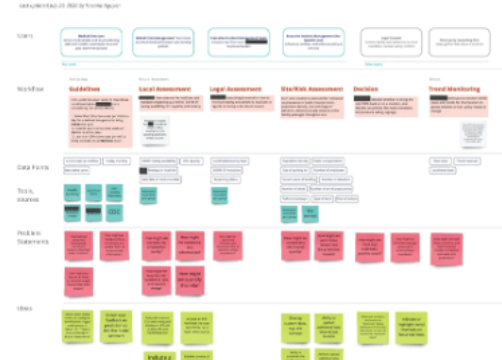
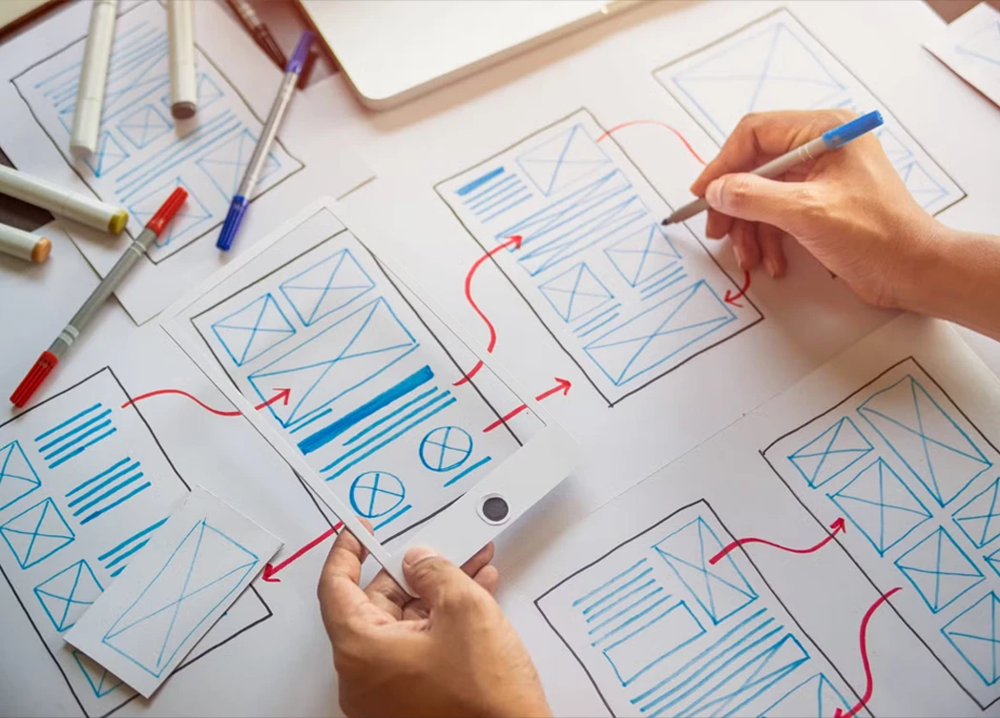

Challenge
As Lead Designer for Beiersdorf's annual report over three reporting years, I worked closely with the Corporate Communications team to highlight the company’s successes and goals and to translate complex financial and sustainability information into a clear and engaging experience across digital and print.
Solution
I developed a shared visual language and design system for both formats, creating a consistent experience for investors, media, employees and other stakeholders. Over three years, the report evolved into a more digital-first experience, introducing new features with each edition.

Concept & Creation
One of the main goals was to use the report to tell the story of Beiersdorf's year, rather than simply presenting a collection of mandatory content. For the 2023 report, I designed a magazine chapter for the printed report, featuring stories about innovation, growth and future-oriented production. Alongside the annual report, it was also printed as a standalone magazine. In the following years, we shifted to an online-first storytelling approach with interactive story cards, videos and quizzes. The new format not only created a engaging reading experience and reached audiences more directly, but also simplified content production during the busy reporting period.


Branding & Design
An annual report contains a vast amount of knowledge and a deep menu. Additionally the introduction of the EU's new sustainability reporting standards (CSRD/ESRS) significantly increased the amount of mandatory content. One of the biggest design challenges was helping readers navigate this complexity without feeling overwhelmed.

The Online-Coach
An annual report contains a vast amount of knowledge and a deep menu. Additionally the introduction of the EU's new sustainability reporting standards (CSRD/ESRS) significantly increased the amount of mandatory content. One of the biggest design challenges was helping readers navigate this complexity without feeling overwhelmed.